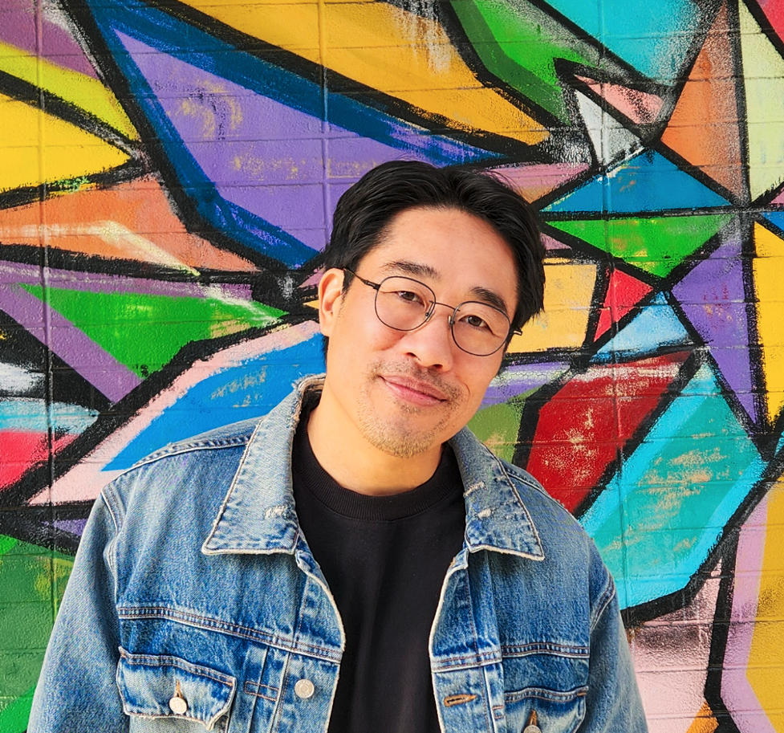

ABOUT

Hello, my name is Henry Finn and I am an Artist and Inventor who builds AI-native entertainment universes and the technology companies around them.
I grew up addicted to comic books, movies, anime, games... all things that I was told would ruin my life and instead became my everything. Add an insatiable curiosity to play with the latest technologies (I was early to VR, AR, AI and Blockchain) and that's pretty much my day job.
I build worlds, platforms, communities, multi-reality games, and AI-powered experiences that turn IP into living ecosystems.
Being an IP kid, I grew up absorbing the values and lessons from my favorite books, comics, and games. For instance, Peter Parker, a particular favorite of mine, taught me that with great power comes great responsibility. Or Naruto Uzumaki, who taught me the power of positivity and hope.
Now that the era of AI and Crypto has brought upon the greatest decentralization of power mankind has ever known, I believe IP of the future has a greater role and responsibility to humanity. (more on that another day)
The point is all day, every day I think deeply (as I can) about the meaning of the human condition, the purpose of technology, and how those two things collide at the intersection of IP & Storytelling!
It's not just my passion it is my life purpose to push the boundaries of Art in a way that allows for the greatest amount of people in the world to benefit.
I build companies that further humanity through Art & Entertainment.
I also grew up working in non-profits since high school and have a strong sense of connection to the people, and my core underlying focus is on improving the lives of the people around me.
I don't just want to change how people entertain themselves, but how they improve themselves through the power of storytelling and technology.
My thesis is that the next major entertainment franchises will be built differently. And brands of the future will be judged by the people differently.
Whether it be anime, comics, gaming, or any platform, our real business is to touch the hearts and minds of the people around us whilst offering them the tools to improve their lives and the lives of the people around them.
Thanks for listening!
Henry
WHO IS HENRY FINN
Henry Finn is an award-winning creative technologist with multiple exits and deep experience creating high-level productions across every major shift in media technology — from the first MiniDV tape to VR/AR, 360 video, blockchain, and AI — for some of the world's biggest talent and brands.
A rare operator, Finn has worked with leading technology companies including Google, Facebook, Samsung, and Spotify; gaming leaders such as Activision; and artists and athletes including Johnny Depp, Jamie Foxx, and Steph Curry. Starting in 2020, he also helped raise money for Andrew Yang on both his presidential and mayoral runs, driven by Yang's early focus on artificial intelligence and its impact on the future.
In 2023, Finn led the acquisition of 0N1 Force, the first crypto anime project in history, and has since reformed it into the first AI-powered self-improvement anime franchise focused on using AI to support youth mental health and is currently working with some of the world's largest anime IP to develop.
His work sits at the intersection of IP, anime, gaming, crypto, and frontier AI. He is part storyteller, part technologist, part entrepreneur focused on building the next generation of East-West entertainment franchises.
Finn has recently founded GK Labs, an incubator and private network for IP/Entertainment executives as well as founders and investors across Web2 and Web3.
VENTURES & ROLES: ENTERTAINMENT & MEDIA
| Blueprint Media 2009–2015 | Storytelling & Production Agency that worked with major tech companies and startups from Google, Mozilla, Facebook, Tim Draper, and many more. Acquired by Luminous Seoul, a Korea-based media agency. | |
| Luminous US 2015–2021 | Award-winning President of Luminous US, establishing one of the first East-West production companies with a focus on producing Korean companies globally. Worked with the world's leading brands from Samsung, Kia, Nike, Activision, Walmart, and many more. Also worked with celebrities such as Johnny Depp, Steph Curry, Kevin Durant, and Danny Glover. | |
| Storyoscopic Films 2015–2021 | Producer and director packaging, financing, and distributing films globally. Successfully sold a 12-year feature-film documentary about the Golden State Warriors to a major studio (that went bankrupt during post-production, whoops). Currently an advisor. | |
| Enclave Studios 2026 | Founded a creative studio for the future of IP at the intersection of East and West — a creative and technological development house pushing IP franchises into the frontier of AI, Blockchain, and cross-reality storytelling. Led the IP development of the world's first community-owned cross-media anime franchise, with world building by Paul Jenkins and Bryan Li. Sold out the first edition premium comic book in less than 24 hours. Currently optioning top IP from creators working with multi-billion dollar franchises from Marvel, DC, Anime, and more. |
VENTURES & ROLES: TECHNOLOGY
| 0N1 Force | First crypto anime. First AI-powered anime franchise as an anime self-improvement network. | |
| GK Labs | A $20M fund and incubator for OFR Fund operating at the intersection of AI/Blockchain & IP/Entertainment. |
VENTURES & ROLES: POLITICS & NON-PROFIT
| Politics, NPOs & Fundraising | In politics, Finn is a fundraiser and media strategist who has worked with Andrew Yang, Bernie Sanders, Fiona Ma, and many local representatives. His focus in politics is AI/UBI/Crypto/Blue Collar/Local Governance. As a social justice warrior, Finn is an award-winning community member whose main focus is on AI/UBI, gun violence, Arts for Youth, S.T.E.A.M. programs, and more. Finn has worked with many esteemed organizations such as Love not Blood, the Kapor Foundation, Google Foundation, KCCEB, SF Faiths, Oscar Grant Foundation, and Trayvon Martin Foundation. |
ADVISORY
| Executive Intelligence 2020–present | A private AI & Security advisory for Fortune 500 CEOs & brand operators. Working with clients from companies such as Samsung, Nike, Stanford Hospital, Walmart, and more. | |
| Unicorn Videos 2023–present | An AI-powered hybrid commercial film studio working with large brands to integrate AI into marketing. Building the next generation of unicorns through the power of storytelling. | |
| ENGEN3 2025–present | AI-powered world-building and content platform. |
FAQ
Who is Henry Finn?
Henry Finn is CEO of 0N1 Force, the first Blockchain + AI Anime IP in history, and founding partner of GK Labs, an incubator for AI/Crypto companies in the IP/Entertainment industry working with some of the world's largest artists and brands — part of OFR Fund, founded by Wei Zhou, the ex-CFO of Binance.
What is an artistpreneur?
A new kind of entrepreneur — someone who creates universes, not just businesses. Henry builds IP empires at the intersection of AI and blockchain, where creators own everything and communities share in the upside.
What is 0N1 Force?
A pioneering anime-inspired IP that became one of the most recognized projects in Web3. Now the first AI-powered anime franchise — expanding into a full multimedia universe focused on using AI to support youth mental health and self-improvement.